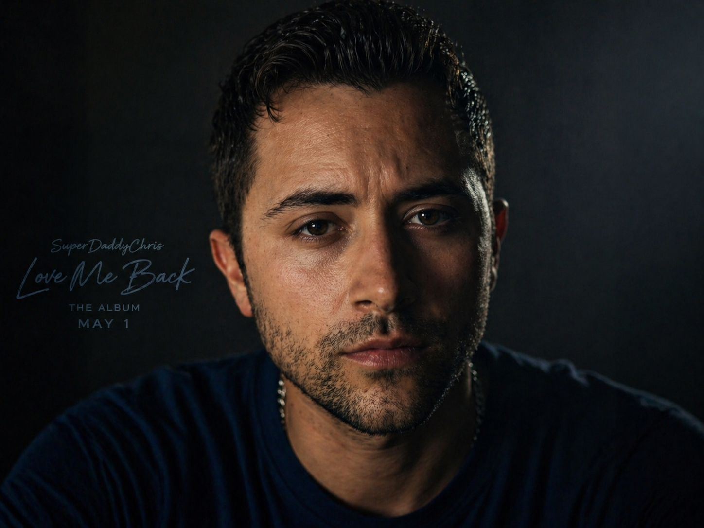
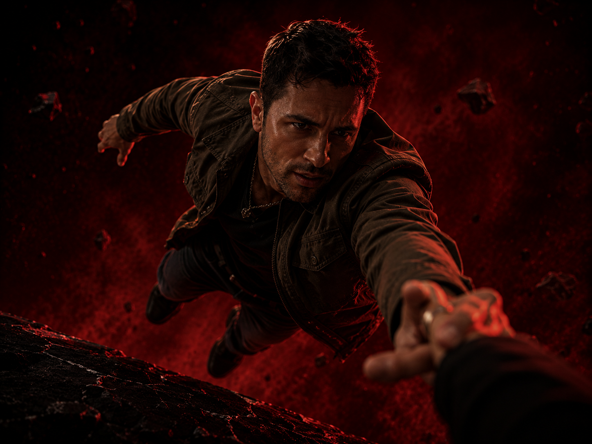

SuperDaddyChris
Artist • Storyteller • Visual Creator

Artist Bio
SuperDaddyChris is an independent hip hop artist, cinematic storyteller, and visual creator known for blending emotional songwriting with innovative AI-powered production. His music explores love, heartbreak, growth, and resilience through a deeply personal lens.
Born and raised in Chicago before later relocating to Houston, SuperDaddyChris began writing music as a teenager and has spent more than two decades developing his craft. Influenced by Michael Jackson, T-Pain, and Eminem, he combines melody, storytelling, and raw emotion into a style that feels both personal and cinematic.
His 2026 album Love Me Back represents his most ambitious work to date, connecting music and visuals into a larger story about heartbreak, reflection, and acceptance.
As a father, soldier, creator, and entrepreneur, SuperDaddyChris creates with purpose: to make people feel something and leave behind stories that last.
“I want people to feel something — and when they look back in 20 years, they’ll call it a classic.”
Photos
